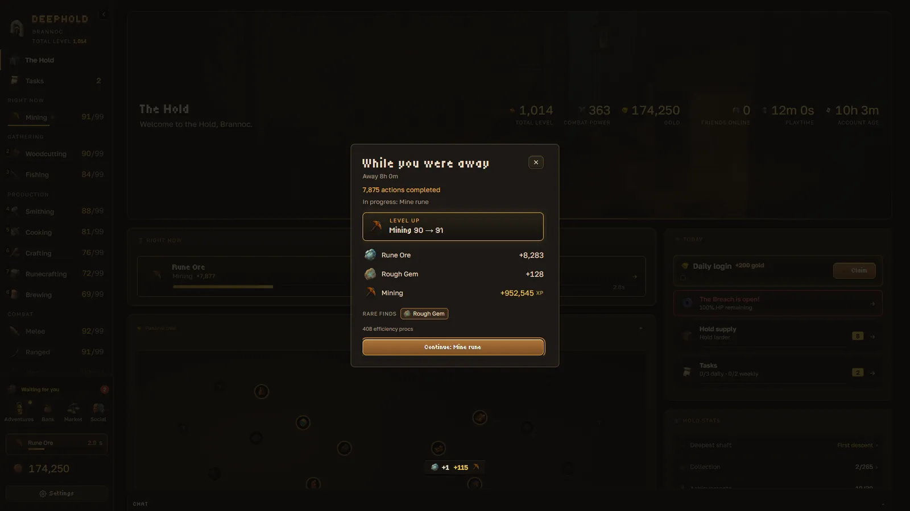
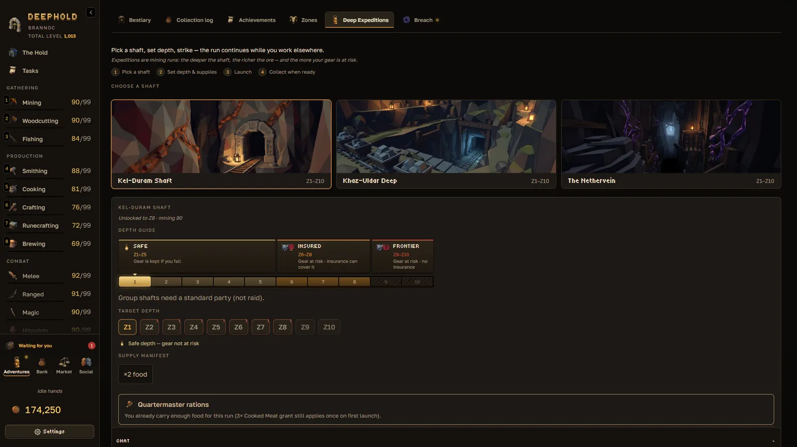

An idle MMO with a player-run market and gear you can lose.
Mine, craft and fight while you're away, then sell what you make to other players.
Free to play. Browser and Windows. Not released yet.
It keeps playing after you log off.
Every skill shares one 30-slot queue. It runs up to 12 hours while you're away.

Below zone 6, the deep can keep your gear.
Lose a fight there and each item breaks or stays down as Lost Cargo. You get 12 hours to recover it. Then anyone can.
Kel Duram shaftMining level needed
- Safe
- Z1Iron10
- Z2Coal, glowcap20
- Z3Cobalt, rune essence35
- Z4Cobalt45
- Z5Mithril55
- Gear at risk. Insurance: 8% of its value.
- Z6Orichalcum68
- Z7Orichalcum, duskglass78
- Z8Adamant, cut gems86
- Gear at risk. No insurance.
- Z9Starmetal, relics93
- Z10Starmetal, relics97

No NPC shops. Players set every price.
Every item was made or found by a player. Buy and sell orders meet on an order book. Fees: 1% to list, 5% on sale.
Free to play. Here's all that Patron adds.
| Feature | Free | Patron, $6.99/mo |
|---|---|---|
| XP | normal | +15% |
| Offline progress | 12 h | 72 h |
| Queue slots | 30 | 60 |
| Market orders | 8 | 20 |
| Bank tabs | 1 | 3 |
| Gear loadouts | 1 | 3 |
| Gold, items, drop rates | never sold | never sold |
Patron is web only. The Steam version sells nothing. All 11 skins are earned in play.
Patch notes
- Honest ledgers
Collection, Bestiary and Achievements now count only what the Hold can give you today, so every total can be finished.
- Kiln coin
Ember drakes drop a little more gold, so the Drake Kiln stays the best-paying solo delve.
- Honest coin
Until an item has traded, its Market value now rises with its tier, so deeper ore, bars and draughts are worth more than starter ones.
One email on launch day.
Questions
- Can I play with friends?
- Yes: parties, guilds, group expeditions and the Breach world boss.
- Was AI used to make it?
- Yes, for some models, textures, animations and art. People reviewed and edited every piece. Full disclosure.